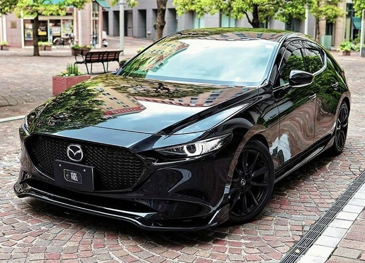

Bus Wisata Terbaik
27 Januari, 2024 oleh Kelompok 6
Dalam industri ini, penghargaan bus wisata terbaik diberikan kepada mereka yang konsisten dalam memberikan standar tertinggi dalam kenyamanan, keamanan, dan pelayanan. Bus yang meraih penghargaan ini tidak hanya memiliki desain yang inovatif, tetapi juga dilengkapi dengan teknologi canggih untuk memastikan perjalanan yang lancar dan menyenangkan.
Minibus Ter-Lucu
28 Januari, 2024 oleh Kelompok 6
Mini bus ter lucu adalah kendaraan yang tidak hanya menawarkan fungsi transportasi, tetapi juga menyemarakkan suasana perjalanan dengan keceriaan dan daya tarik visualnya yang unik. Penghargaan untuk mini bus ter lucu diberikan kepada mereka yang berhasil menggabungkan desain yang menggemaskan dengan kinerja yang andal. Mini bus ini mungkin menampilkan warna-warna cerah, karakter lucu, dan elemen desain yang membuatnya menonjol di antara kendaraan lainnya. Penghargaan ini mengakui upaya kreatif para perancang dan operator mini bus untuk menciptakan pengalaman perjalanan yang menyenangkan dan menghibur.
Sedan Ter-Canggih
24 Januari, 2024 oleh Kelompok 6
Penghargaan sedan tercanggih diberikan kepada kendaraan yang meraih prestasi tinggi dalam menghadirkan teknologi terkini dan inovasi dalam segmen sedan. Dengan fitur-fitur pintar, sistem keamanan canggih, dan desain yang futuristik, sedan ini mewakili puncak kemajuan dalam dunia otomotif. Penghargaan ini mencerminkan dedikasi produsen sedan untuk memberikan pengalaman berkendara yang terdepan, memadukan kenyamanan, keamanan, dan gaya dengan sempurna. Dengan prestasi ini, sedan tercanggih menjadi pilihan utama bagi mereka yang menginginkan kombinasi mutakhir antara performa dan teknologi dalam setiap perjalanan.
